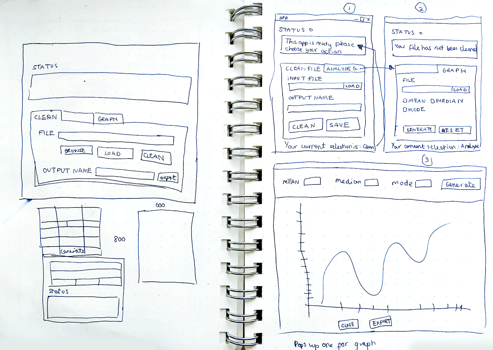
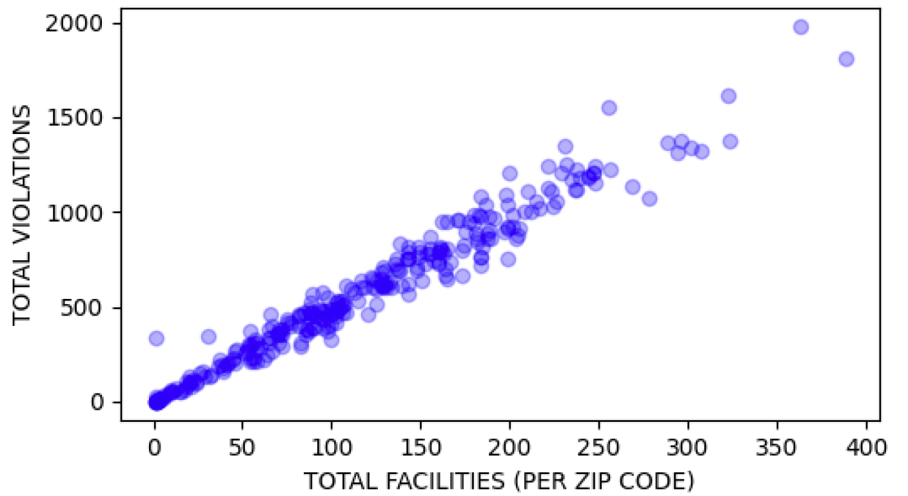

This is a prototype application built in Python with a GUI built in Tkinker to prompt user to load a dataset, clean it and then export it as a JSON. The GUI was built to make it easier for non-coders to wrangle data ready to load for visualisations. The client initially needed the program to generate the mean, mode and median for the inspection score per year for each type of vendor’s seating and for each ‘zip code’ therefore these functions were built into the visualisation tool. Furthermore, the client wanted a way to save/export the cleaned data file and visualisations.
This overview diagram shows how the flow of application will be used from loading to exporting. It was
gathered that perhaps two separate applications may be need: clean, parsing the data and then loading the
data to produce graph visualisations. The application would also benefit from concurrency due to
simultaneous tasks needing to be run. First Jupyter Notebooks was used to clean and wrangle the data then
the most efficient cleaning methods were chosen for program.

The client needed a way to input the datafiles visually and clean the data therefore using input fields, upload files dialog and buttons was best practise to minimise errors and reduce complication of entering incorrect data. This way the user will only be able to select from given options and load files available on the desktop.
Feedback showed that a status area was needed to provide consistent feedback to build trust in the application. Furthermore, extra labelled input fields needed to be added for the different data files to make it more intuitive for the end user to know which needed to uploaded and where. Buttons to load the different functions like clean and export made sense so the user had more control. A status bar showing green message to verify and red message for errors was added to provide continuous feedback to user.

Tkinter provides a variety of widgets that I needed such as labels, buttons, input fields and checkboxes which were in the GUI wireframes thus was chosen to build this prototype. Furthermore the built in file dialogue function created a pop-up on click to source the files, load it, close the program and also provide extra functionality options. I was also able to customise the style of the app which made it faster to implement the program with a GUI to create a prototype to test the code.
Click For Code View Github File
import tkinter as tk
import pandas as pd
import numpy as np
import matplotlib.pyplot as plt
import matplotlib.cbook as cbook
import json, os
from tkinter import ttk
from tkinter import *
from tkinter.filedialog import asksaveasfile
from tkinter.filedialog import asksaveasfilename
from tkinter import filedialog
from tkinter import messagebox
from datetime import datetime
# ------ GLOBAL VARIABLES ------ #
# Change missing values to NaN for consistency
missing_values = ["NA", "N/A", "na", r"^\s*$", "", " ", "NaN"]
# counts value then finds the one that appears the most time (mode)
df1_mode = lambda x:x.value_counts().index[0]
# Changes to true once file clean has been done at least once
file_cleaned = False
# creating instance of Tk class
window = tk.Tk()
window.title("DATA ANALYSIS TOOL")
# disable windows from resizing
window.resizable(False, False)
# window sizing
window_height = 450
window_width = 500
screen_width = window.winfo_screenwidth()
screen_height = window.winfo_screenheight()
# Places window in middle of screen
x_cordinate = int((screen_width/2) - (window_width/2))
y_cordinate = int((screen_height/2) - (window_height/2))
window.geometry("{}x{}+{}+{}".format(window_width, window_height, x_cordinate, y_cordinate))
# Adding Tabs to window
tab_control = ttk.Notebook(window)
cleaning_tab = ttk.Frame(tab_control)
graph_tab = ttk.Frame(tab_control)
# Adding text to tab and styling
tab_control.add(cleaning_tab, text="1. Clean Data")
tab_control.add(graph_tab, text="2. Generate Graph")
tab_control.pack(expand=1, fill="both")
# ------ TABLE: SEATING MEAN, MEDIAN, MODE ---- #
def table_seating():
# SEATING
# making grouped by activity date first, then seating
grouped = json_file.groupby(['ACTIVITY DATE', 'SEATING'])
# make activity date by YEAR
# using score to calculate
group_json_file= grouped['SCORE']
# Calculating Mode by using value counts then finding the first value in row
# calculating mean, median
df1_mean = group_json_file.agg([('MEAN', 'mean'), ('MEDIAN','median'), ('MODE', df1_mode)])
# turn mean/median/mode groupby table into DataFrame
df1_1 = pd.DataFrame(df1_mean)
print(df1_1)
return df1_1
# ------ TABLE: ZIP CODE MEAN, MEDIAN, MODE ---- #
def table_zip():
# making grouped by activity date first, then seating
grouped2 = json_file.groupby(['ACTIVITY DATE', 'ZIP CODES'])
# using score to calculate
group_df2 = grouped2['SCORE']
# Calculating Mode by using value counts then finding the first value in row
# calculating mean, median
df2_mean = group_df2.agg([('MEAN', 'mean'), ('MEDIAN','median'), ('MODE', df1_mode)])
# turn mean/median/mode groupby table into DataFrame
df2_1 = pd.DataFrame(df2_mean)
print("First 100:\n", df2_1.head(100))
return df2_1
# ------ WRANGLING - TOTAL VIOLATION COUNT PER CODE ----- #
def w_total():
global total_score
# total violations PER facility
total_score = json_file['VIOLATION CODE'].value_counts().reset_index() # reset index
total_score.columns = ['VIOLATION CODE', 'TOTAL VIOLATIONS']
total_score = total_score.sort_values(by=['VIOLATION CODE'])
# Remove values below this total amount
values_below = slider_max.get()
# Drop rows, keep rest
total_score = total_score[total_score['TOTAL VIOLATIONS'] > values_below]
print(total_score)
return total_score
# ------ WRANGLING - TOTAL VIOLATION FOR ZIP CODE COMPARISON FACILITIES ----- #
def w_violation_facility():
global df6, df6_str, colours
# Grab df5_merge and count up violations per facility
df6_count = json_file['FACILITY ID'].value_counts().reset_index()
# Total violations of each facility
df6_count.columns = ['FACILITY ID', 'TOTAL VIOLATIONS']
# Add total violations to end of facilities dataframe.
df6_merge = pd.merge(json_file, df6_count, how='inner', on='FACILITY ID')
# Groups by zip then shows total violations per facility grouped via zip code
df6_total = df6_merge.groupby('ZIP CODES')['FACILITY ID'].value_counts().to_frame(name = 'TOTAL VIOLATIONS').reset_index()
# std calculates variability and avg distance from mean
agg_group = [ ('FACILITIES', 'count'), ('VIOLATIONS', 'sum'), ('STD','std'),
('MEAN','mean'),('MEDIAN','median'), ('MODE', df1_mode), ('MIN', 'min'), ('MAX', 'max')]
df6_group = df6_total.groupby('ZIP CODES')['TOTAL VIOLATIONS'].agg(agg_group)
df6_group['RANGE'] = df6_group['MAX'] - df6_group['MIN']
# Fill in empty or NaN values as 0
df6_group = df6_group.fillna(0)
# Resets index and ZIP CODES is now level 0 column header
df6 = df6_group.reset_index()
# Random colours for graph!
N = df6.shape[0]
colours = np.random.rand(N)/2
# Turn zip codes into a string
df6_str = df6['ZIP CODES'].astype(str)
return df6
# DF6 is the final cleaned, prepped, wrangled DF to use for graphs #
To import cleaned JSON file to do some descriptive statistics Tkinker's openfiledialogue function would
allow sourcing of CSV on the system and load it into DataFrame and then return the file location within
the input field to report back to user.
Click For Code View Github File
# ----- UPLOAD/BROWSE FOR FILES ----- #
# Browse inventory file to upload function
def open_file1():
global df_inventory, status_bar
try:
# Open only CSV
file = filedialog.askopenfile(filetypes =[('Data Files', '*.csv')])
# Fill in missing value with NaN
df_inventory = pd.read_csv(file.name,keep_default_na=False, na_values=missing_values)
input_text = file.name
# Update input field with file upload url
input_inventory.delete(0, tk.END)
input_inventory.insert(0, input_text)
except AttributeError:
status_bar.configure(foreground='red')
status_text.set('[ERROR] Please open a valid location for the Inventory file')
print("Please open a valid location for the Inventory file")
# Browse violation file to upload function
def open_file2():
global df_violations
try:
file = filedialog.askopenfile(filetypes =[('Data Files', '*.csv')])
df_violations = pd.read_csv(file.name,keep_default_na=False, na_values=missing_values)
input_text = file.name
# Update input field with file upload url
input_violations.delete(0, tk.END)
input_violations.insert(0, input_text)
except AttributeError:
status_text.set('Please open a valid location for the Violation file')
print("Please open a valid location for the Violation file")
# Browse inspection file to upload function
def open_file3():
global df_inspections
try:
file = filedialog.askopenfile(filetypes =[('Data Files', '*.csv')])
df_inspections = pd.read_csv(file.name,keep_default_na=False, na_values=missing_values)
input_text = file.name
# Update input field with file upload url
input_inspections.delete(0, tk.END)
input_inspections.insert(0, input_text)
except AttributeError:
print("Please open a valid location for the Inspection file")
def open_file4():
global json_file
try:
file = filedialog.askopenfile(filetypes =[('JSON Files', '*.json')])
# change this to file after
json_file = pd.read_json(file)
input_text = file.name
# Update input field with file upload url
input_graph.delete(0, tk.END)
input_graph.insert(0, input_text)
status_text.set('Your JSON file has been loaded.')
except AttributeError or ValueError:
error_location()
print("Please open a valid location for the data file")
# ----EXPORT TO JSON ----- #
export_json(df4_cleaned, columns)
print("Congratulations, your data has been clean and exported into the same folder")
# Position of input fields
input_inventory.grid(row=1, column=1, padx=5, pady=0)
input_violations.grid(row=2, column=1, padx=5, pady=0)
input_inspections.grid(row=3, column=1, padx=5, pady=0)
input_filename.grid(row=4, column=1, padx=0, pady=0)
# File Browse Buttons
btn_browse1 = ttk.Button(cleaning_tab, text="Browse", command = lambda:open_file1())
btn_browse2 = ttk.Button(cleaning_tab, text="Browse", command = lambda:open_file2())
btn_browse3 = ttk.Button(cleaning_tab, text="Browse", command = lambda:open_file3())
# Browse button layout
btn_browse1.grid(row=1, column=2)
btn_browse2.grid(row=2, column=2)
btn_browse3.grid(row=3, column=2)
# btn_save_json.grid(row=4, column=2)
On inspection there were lots of multiple variants of words, differing cases, spaces, dashes and extra punchuation. Furthermore, there were 3 different data files needing to be cleaned and merged. Therefore cleaning functions were developed so they can be used multiple times on different datasets and to create consistency amongst the data for easier wrangling.
Click For Code View Github File
# ---- FIRST CLEAN ---- #
def generic_clean(df):
global file_cleaned
# Dropping data with over 50% null to avoid errors
print("...10% Dropping empty cells")
df.dropna(inplace = True)
# Replace NaN, missing values etc with 0
df.fillna(0)
status_text.set("...20% Neatening missing values")
status_text.set("...Currently cleaning files please wait")
print("...30% Stripping spaces")
# Regex finds spaces 2 or more & changes to 1 and strips space before/after
df.columns = [col.strip().replace(' ', ' ') for col in df.columns]
print("...40% Converting all to uppercase")
df.columns = [x.upper() for x in df.columns]
# print(csv_df.columns) to check if it works :)
if "PE DESCRIPTION" in df:
print("...60% Slicing out & cleaning seating column")
# Seating numbers only
new_seat_col = df['PE DESCRIPTION'].str.extract('.*\((.*)\).*') # print(new_seat_col)
# Remove seating numbers leave behind rest
df['PE DESCRIPTION'] = df['PE DESCRIPTION'].str.replace(r" \(.*\)","") # print(pe_list)
# New headers
df['SEATING'] = new_seat_col
# Remove Alpha, Commas, Full stop and Spacing
df['SEATING'] = df['SEATING'].str.replace('[a-zA-Z,. ]', '')
# '/^[a-zA-Z0-9,\.\s]*$/'
# [a-zA-Z]
if "SCORE" in df:
print("...70% Converting to correct data types")
df["SCORE"] = df["SCORE"].apply(np.int64)
if "ZIP CODES" in df:
print("...80% Cleaning last bits")
df["ZIP CODES"] = df["ZIP CODES"].apply(np.int64)
# int_df = df["ZIP CODES"].astype(int)
if "ACTIVITY DATE" in df:
print("...90% Formatting dates")
df['ACTIVITY DATE'] = pd.to_datetime(df['ACTIVITY DATE'], format='%m/%d/%Y')
print("...100%")
file_cleaned = True
print(df.head(5))
return df
# ---- SECOND CLEAN ---- #
def second_clean(df):
if "PROGRAM STATUS" in df:
print("...30% Removing inactive accounts")
df = df[df['PROGRAM STATUS'] != 'INACTIVE']
if "ACTIVITY DATE" in df:
status_text.set("...Cleaning data please wait")
print("...60% Formatting dates")
# Turns all dates to Y (YEAR) e.g 2019-02-3 to 2019
df['ACTIVITY DATE'] = df['ACTIVITY DATE'].dt.year
if "SERIAL NUMBER" and "FACILITY ID" in df:
print("...90% Drop duplicates")
df = df.drop_duplicates(subset=['ACTIVITY DATE', 'FACILITY ID', 'SERIAL NUMBER'], keep='last')
status_text.set("...Your data have been cleaned and exported to the same folder!")
print(df.head(5))
return df
# ---- CLEAN FILE FUNCTION BUTTON ---- #
def clean_files():
global df4_cleaned
status_preparing()
# Clean & Creating new subset DataFrames
try:
# Only clean if ALL files are present
if (len(input_inspections.get()) != 0) and (len(input_violations.get()) != 0) and (len(input_inventory.get()) != 0):
global df1, df2, df3
status_okay()
# Clean and created subset of inventory
clean1 = generic_clean(df_inventory)
df1 = pd.DataFrame(clean1, columns=inventory_headers)
# Subset of violations with new headers (condensed )
clean2 = generic_clean(df_violations)
df2 = pd.DataFrame(clean2, columns=violation_headers)
# Subset of inspections condensed new headers
clean3 = generic_clean(df_inspections)
df3 = pd.DataFrame(clean3, columns=inspection_headers)
# ----MERGE INTO 1 FILE ----- #
# merge. common columns = facility id for ZIP CODES
df4_merge = pd.merge(df3, df1, how='inner', on='FACILITY ID')
print(df3, df1, df4_merge.head(10))
# merge columns so serial number becomes the violation code
df4_merge2 = pd.merge(df4_merge, df2, how='inner', on='SERIAL NUMBER')
print(df4_merge2)
# print("SERIAL df4_merge2: ", df4_merge.loc[df4_merge['SERIAL NUMBER'] == 'DA2FXQNN6'])
# df4_merge2 = df4_merge2.pop('SERIAL NUMBER')
# second clean
df4_second = second_clean(df4_merge2)
df4_cleaned = df4_second.reset_index(drop=True)
export_json(df4_cleaned)
else:
# If 1 or more files not present goes to error
error_files()
except NameError:
print("There is an issue with one or more of your file uploads, please check them then try again.")
The next focus was to reformat/export as a JSON. As the dataset contain over 100,000 isntances JSON file
was used
because of the low cost of data usage and high parsing speeds. It was decided that all files would be
merged into 1 datafile that contained only the useful attributes for the descriptive statistics and
visualisations. The rest were
removed
Click For Code View GitHub File
# ---- EXPORT TO JSON ---- #
def export_json(file):
global status_bar, new_json_name, file_name
file_name = "facilities"
if len(input_filename.get()) != 0:
file_name = input_filename.get()
else:
file_name = "facilities"
try:
# New json name
new_json_name = file_name + ".json"
file.to_json(new_json_name, index='true')
status_exported()
except NameError:
error_files()
# --- EXPORT GRAPHS ----- #
def export_graphs():
# Build graphs but not show
try:
graph_selection()
# Export as image
graphs.savefig('graphs.png')
status_text.set('Your graphs have been exported into the same folder!')
except NameError:
error_location()
To produce descriptive statistics the data needed to be wrangled into suitable DataFrame. Groupby function was used to group the necessary attributes and then Aggregate function was used to find the mean, median, mode and standard deviation.
Click For Code View Github File
# ---- SEATING MEAN, MEDIAN, MODE SCORE ----- #
# making grouped by activity date first, then seating
grouped = df1.groupby(['ACTIVITY DATE', 'SEATING'])
# make activity date by YEAR
# using score to calculate
group_df1 = grouped['SCORE']
# Calculating Mode by using value counts then finding the first value in row
# calculating mean, median
df1_mean = group_df1.agg([('MEAN', 'mean'), ('MEDIAN','median'), ('MODE', df1_mode)])
# turn mean/median/mode groupby table into DataFrame
df1_1 = pd.DataFrame(df1_mean)
print(df1_1)
# ---- ZIP CODES MEAN, MEDIAN, MODE SCORE ----- #
# making grouped by activity date first, then seating
grouped = df1.groupby(['ACTIVITY DATE', 'ZIP CODES'])
# using score to calculate
group_df2 = grouped['SCORE']
# Calculating Mode by using value counts then finding the first value in row
# calculating mean, median
df2_mean = group_df2.agg([('MEAN', 'mean'), ('MEDIAN','median'), ('MODE', df1_mode)])
# turn mean/median/mode groupby table into DataFrame
df2_1 = pd.DataFrame(df2_mean)
print(df2_1)
The design should always keep users informed about what is going on, through appropriate feedback therefore a status bar was implemented. Initially the design was to add it to the top but it was changed due to research found a lot of applications consider it as secondary in hierarchy to the functions like in Microsoft Word thus placed at the bottom.
Click For Code View Github File
# ----- STATUS BAR ---- #
status_text = StringVar(window)
status_text.set("[TIP] Please load your files by clicking the browse button(s).")
status_bar = Label(window, textvariable=status_text, bd=1, relief=tk.SUNKEN, font=('Helvetica', 12, 'normal'))
status_bar.configure(foreground='green')
status_bar.pack(side=BOTTOM, fill=X)
status_bar.config(background='#F9F9F9', relief = RAISED, height = 2)
# ---- STATUS MESSAGES ---- #
def status_preparing():
status_bar.configure(foreground='green')
status_text.set("[STATUS] Preparing to clean loaded files...")
def status_cleaned():
status_bar.configure(foreground='green')
status_text.set("[SUCCESS] You have cleaned the files now please export/save the file!")
def status_exported():
status_text.set("[SUCCESS[ You have exported your new data files!")
status_bar.configure(foreground='green')
def status_okay():
status_bar.configure(foreground='green')
status_text.set("[SUCCESS] all files cleaned!")
def error_files():
status_bar.configure(foreground='red')
status_text.set('[ERROR] There is a problem with your file(s) please check before exporting!')
print("There is a problem with your files please check before exporting!")
def status_illegal():
status_bar.configure(foreground='red')
status_text.set('[ERROR] You have just commited an illegal actiob')
print("You have not loaded or cleaned your files to export yet!")
def error_location():
status_bar.configure(foreground='red')
status_text.set('[ERROR] Please load valid location for the data file by clicking browse.')
The client needed a way to input the datafiles visually and clean the data therefore using input fields, upload files dialog and buttons was best practise to minimise errors and reduce complication of entering incorrect data. This way the user will only be able to select from given options and load files available on the desktop.

Click For Code View Github File
# ------ TAB 1: CLEANING CONTENTS ------ # # Adding text label ttk.Label(cleaning_tab, text="Inventory File", style="STD.Label").grid(row= 1, column=0, padx=10, pady=10, sticky=W) ttk.Label(cleaning_tab, text="Violations File", style="STD.Label").grid(row= 2, column=0, padx=10, pady=10, sticky=W) ttk.Label(cleaning_tab, text="Inspections File", style="STD.Label").grid(row= 3, column=0, padx=10, pady=10, sticky=W) ttk.Label(cleaning_tab, text="Ouput File Name", style="STD.Label").grid(row=4, column=0, padx=10, pady=25, sticky=W) ttk.Label(cleaning_tab, text="Please upload your data (.csv) files to be cleaned", style='STD.Label').grid(row=0, column=0, columnspan=3, padx=10, pady=30) # Adding input fields to cleaning_tab input_inventory = ttk.Entry(cleaning_tab) input_violations = ttk.Entry(cleaning_tab) input_inspections = ttk.Entry(cleaning_tab) input_filename = ttk.Entry(cleaning_tab) # Position of input fields input_inventory.grid(row=1, column=1, padx=5, pady=0) input_violations.grid(row=2, column=1, padx=5, pady=0) input_inspections.grid(row=3, column=1, padx=5, pady=0) input_filename.grid(row=4, column=1, padx=0, pady=0) # File Browse Buttons btn_browse1 = ttk.Button(cleaning_tab, text="Browse", command = lambda:open_file1()) btn_browse2 = ttk.Button(cleaning_tab, text="Browse", command = lambda:open_file2()) btn_browse3 = ttk.Button(cleaning_tab, text="Browse", command = lambda:open_file3()) # Browse button layout btn_browse1.grid(row=1, column=2) btn_browse2.grid(row=2, column=2) btn_browse3.grid(row=3, column=2) # btn_save_json.grid(row=4, column=2) # Action Buttons btn_save = ttk.Button(cleaning_tab, text="Save As", command= lambda:save()) btn_clean = ttk.Button(cleaning_tab, text="Clean & Export", command= lambda:clean_files()) btn_close = ttk.Button(cleaning_tab, text="Close", command=exit) # Action button layout btn_clean.grid(row=5, column=1) btn_save.grid(row=5, column=0, sticky=E, pady=20) btn_close.grid(row=5, column=2, sticky=W)
It was decided that the two programs would be within the same tool to create a more seamless experience and they would accessed by tabs. Tkinter's layout management function Pack was used to create the tabs then Grid manager was used for the widgets as this helped keep consistency with spacing, layout and visual composition.
The client needed a tool to generate visualisations from the prepared dataset and a way to manipulate the values to change the visualisation. Therefore Matplotlib library was intergrated in Tkinter and Pandas to generate graphs. The Tkinter library provided UI like check list and slider which solved the need to manipulate the values.

Click For Code View Github File
# ------ TAB 2: GRAPH CONTENTS ------ #
ttk.Label(graph_tab, text="Upload your cleaned data file to produce graphs for analysis",
style='STD.Label').grid(row=0, column=0, columnspan=3, padx=10, pady=20)
# 1) Upload data file
ttk.Label(graph_tab, text="Cleaned Data File", style='STD.Label').grid(row=1,
column=0, padx=10, pady=10, sticky=W)
# Adding input fields to graph_tab
input_graph = ttk.Entry(graph_tab)
# Position of input fields
input_graph.grid(row=1, column=1, sticky=W)
# Browse button
btn_graph_browse = ttk.Button(graph_tab, text="Browse", command = lambda:open_file4())
btn_graph_browse.grid(row=1, column=2, sticky=W)
# 2) Select graphs
ttk.Label(graph_tab, text="Select the visualisations you would like to generate",
style="STD.Label").grid(row= 2, column=0, padx=10, pady=10, sticky=W, columnspan=3)
# Check boxes
v_seat = tk.IntVar()
v_zip = tk.IntVar()
graph1 = tk.IntVar()
graph2 = tk.IntVar()
graph3 = tk.IntVar()
graph4 = tk.IntVar()
# Seating Table
check_seat=Checkbutton(graph_tab,text="Seating Stats", variable=v_seat,
onvalue=1, offvalue=0, background='#ececec')
check_seat.grid(row=3,column=0, sticky=W,columnspan=2, padx=5, pady=5)
# Zip Codes Table
check_zip=Checkbutton(graph_tab,text="Zip Code Stats(Terminal)",
variable=v_zip, onvalue=1, offvalue=0, background='#ececec')
check_zip.grid(row=3,column=1, sticky=W)
# Total violations per code
check_total=Checkbutton(graph_tab,text="Total Violations For Each Violation Code",
variable=graph1, onvalue=1, offvalue=0, background='#ececec')
check_total.grid(row=4,column=0, sticky=W, columnspan=3, padx=5)
# Remove values between + Slider
ttk.Label(graph_tab, text="Delete values below", style="STD.Label",
foreground="#777777").grid(row= 5, column=0, padx=10, sticky=W)
# Add slider so they dont enter wrong values
# max_violation = df4_cleaned['TOTAL VIOLATIONS'].agg('max')
slider_max = Scale(graph_tab, from_=0, to=1000, orient=HORIZONTAL, bg = "#ececec", length=200)
slider_max.grid(row=5, column=1, columnspan=2, sticky=W, padx=5)
check_zip=Checkbutton(graph_tab, text="Total Violations Per Zip Code", variable=graph2, onvalue=1, offvalue=0, background='#ececec')
check_zip.grid(row=6,column=0, sticky=W, columnspan=3, padx=5)
check_facility=Checkbutton(graph_tab,text="Total Facilities vs.
Total Violations", variable=graph3, onvalue=1, offvalue=0, background='#ececec')
check_facility.grid(row=7,column=0, sticky=W, columnspan=3, padx=5)
check_facility=Checkbutton(graph_tab,text="Standard Deviation, Range,
Totals Comparison", variable=graph4, onvalue=1, offvalue=0, background='#ececec')
check_facility.grid(row=8,column=0, sticky=W, columnspan=3, padx=5)
4 graphs are produced using this tool to plot graphs using Matplotlib. In the GUI you are able to check which ones to show and what values to delete.

There were many things I wanted to add for this prototype that I did not add due to time constraints this included concurrency as the application lagged when datafiles were being loaded into the GUI.
Furthermore, the visualisations encountered some issues with X and Y data point visibility as there was too many instances. One solution would be to spit data into quarters, create wider graphs or binning a range of values which may reduce the observation issues.
Next steps... would be to build a tool that can accept a more generic dataset as this one was catered towards the specific dataset given.